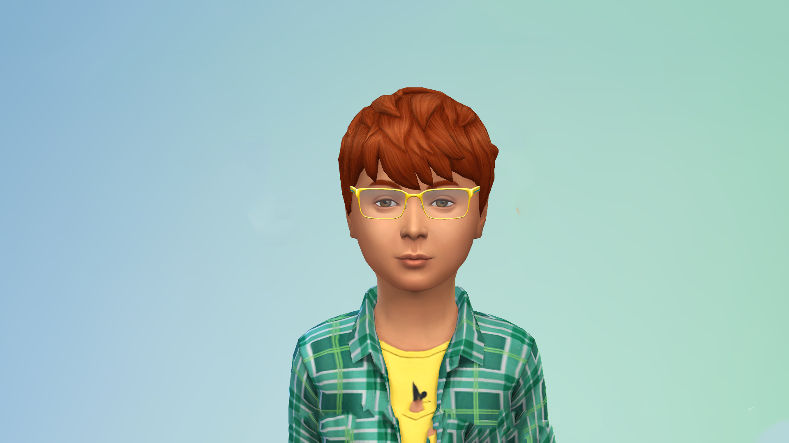

Name : Alexandru TUDOR
Background
Date of birth :
11/01/2010
Location :
Timisoara, Romania
Work Place :
None
School :
Grigore Moisil High School - Gymnasium body
Technology Level :
Medium
Saut à la ligne
Main Points
- He is still in middle school but he already knows he wants to work in the computer field.
- He does not have a lot of friends so he does not go out often.
- He is an only child, and spends all his free time playing video games with his dad.
Goals
-
Practical Goals :He wants to have good grades to be admitted to the high school of his choice.Saut à la ligne
-
Personnal Goals :He wants to start learning the basics of computer science because he is very curious and has many projects.Saut à la ligne
-
Business Goals :He wants to create a video game that his father will not manage to finish.Saut à la ligne
Frustration and Pain Points
- He does not have any computer science class in school yet, and needs to wait to College before getting some.
- He does not anything about computer science yet, and all the sites he finds use concepts too complicated for him to understand, so he looks for simple explanations of the basics.
- He does not have any smartphone yet, so he needs to find an app with a web version.
Detailed Description
"Students who study computer science unlock a world of opportunities for themselves."
~ Dr. John DEASY ~
He leaves school at 5 pm and takes the bus home. He has a snack before doing his homework, then uses the Play the Web application in his spare time to learn basic skills and improve his scores in the challenges. He then goes to dinner with his parents at around 7.30 pm.
Scenario
He logs on to the application, starts by completing one or two new lessons, and then goes on to complete the corresponding challenges to check that he has understood. Then he plays other challenges to improve his scores.
Other Details
- He loves dragon story.
- He would secretly like to become a hacker so he can access all the video games he wants.